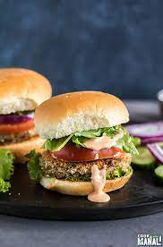

Indian Burger

Description:-
CAUTION:This Indian dish is higly addictive in taste try it on your own risk.
An Indian-style burger boasts a fusion of robust spices, featuring a succulent spiced patty enveloped in a soft bun, complemented by vibrant chutneys and crisp veggies.
Ingredients:
- 500g ground chicken or lamb
- 1 large tomato, sliced
- 1 red onion, thinly sliced
- Mint-coriander chutney
- green chilies-4
- Tamarind-date chutney
- regular masals and salt
- Cooking oil
Steps
- Preparing Spiced Patties:
Mix ground meat with garam masala, turmeric, cumin, and salt. Form into patties and cook in oil until fully cooked.
- Toasting Buns and Chutney Spread:
Toast the burger buns and spread mint-coriander chutney on one half and tamarind-date chutney on the other
- Assembling Indian-Style Burgers:
Assemble burgers with lettuce, tomato, onion, and the spiced patty. Serve with extra chutneys on the side. Enjoy your Indian-style burgers!